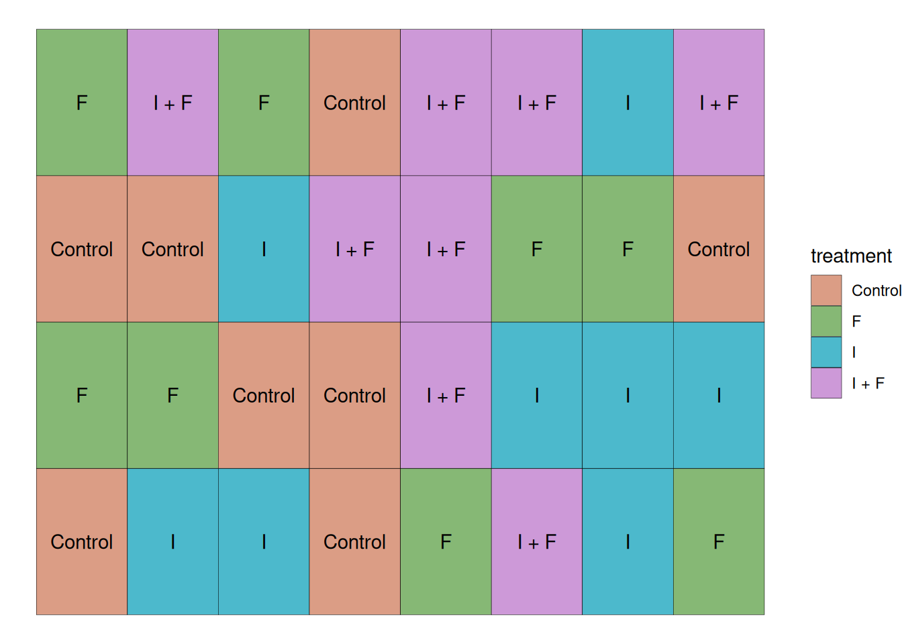
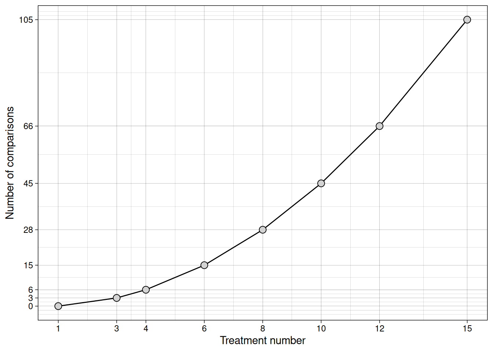

Introduction
Up to this point, we have focused on experiments with two treatments.
But most agronomic experiments involve more than two treatments:
- Multiple nitrogen rates
- Several hybrids
- Several fungicides
- Different seeding rates
So the question becomes:
What changes when we move from two treatments to many?
Case Study
Suppose we are testing four seed treatments:
- No chemical treatment (Control)
- Insecticide treatment (I)
- Fungicide treatment (F)
- Insecticide + Fungicide (I + F)
Experimental Layout
This study was conducted with the 4 treatments mentioned previously and 8 replications, which brings the total number of experimental units to 32. In this case, all experimental units were randomly placed in the field. As the plot layout below shows.
Visualizing the Data
Let’s take a look at the data from this trial. Like we’ve done in previous modules, let’s plot the individual observations as empty circles, and then represent the mean and standard error as filled triangles and error bars, respectively.

We can see that we have four sample means and their standard errors, each of them represents a different population that we want to make a statement about. Like we’ve seen in previous modules, each set of sample mean and standard deviation represents a population. These populations can be represented in the distribution plot below:

Research question:
Does seed treatment affect corn yield?
Hypotheses
Null hypothesis:
\[H_0: \mu_{control} = \mu_{I}= \mu_{F}= \mu_{I + F}\]
Alternative hypothesis:
\[H_a: at~least~one~mean~is~different\]
Note that the alternative hypothesis does not tell us which of the means is different from the others. It simply states that at least one of them is. Figuring out which mean differs, in case we reject \(H_0\), is a separate step that we will explore in a future class.
The Linear Additive Model
The linear additive model is the same as before, just with more treatments:
\[Y_{ij} = \mu + \tau_i + \epsilon_{ij}\]
Where \(i\) indexes the treatment (control, insecticide only, fungicide only, insecticide + fungicide), and \(j\) indexes the observation for that treatment (replication).
Where:
\(Y_{ij}\) = observed yield
\(\mu\) = overall mean yield
\(\tau_i\) = treatment effect
\(\varepsilon_{ij}\) = random error
Since the linear additive model decomposes the population means into an overall mean (\(\mu\)) and treatment effects (\(\tau_i\)), our hypotheses can be restated as:
\[H_0: \tau_{control} = \tau_{I}= \tau_{F}= \tau_{I + F} = 0\]
\[H_a: at~least~one~\tau_i \neq 0\]
This leads to an important question:
How do we test this hypothesis?
Testing for differences across multiple populations
One could simply ask:
Can’t we simply run multiple \(t\)-tests? It worked for two populations!
Multiple \(t\)-tests
Let’s think about what comparing multiple populations with \(t\)-tests means.
Error rate
\(\alpha\) controls the error rate per test, which means that, as the number of tests grows, so does the probability that we will identify false positives in comparisons.
The table below shows the probability of finding at least one false positive effect (Type I Error) by the number of comparisons we make for two \(\alpha\) values.
| Number of tests | \(\alpha=0.05\) | \(\alpha=0.01\) |
|---|---|---|
| 1 | 0.05 | 0.01 |
| 3 | 0.14 | 0.030 |
| 6 | 0.27 | 0.06 |
| 10 | 0.40 | 0.1 |
| 45 | 0.90 | 0.36 |
Some observations about this table:
- Lower \(\alpha\) values can help us control this experiment-wise error rate. However, remember the trade-off between \(\alpha\) and power to identify differences?
- Lowering \(\alpha\) too much might hurt our ability to identify differences unless they’re large.
- At 45 comparisons, we are almost guaranteed to make a mistake.
Looking at these numbers, you might be asking how often do we make 45 comparisons?
Number of comparisons
Let’s explore the relationship between the number of treatments and the number of comparisons in a trial.
2 treatments
If we are comparing treatments A and B, the means we might think about are \(\mu_A\) and \(\mu_B\).
- \(\mu_A = \mu_B\)
3 Treatments
A, B, and C
We run the following comparisons:
- \(\mu_A = \mu_B\)
- \(\mu_B = \mu_C\)
- \(\mu_A = \mu_C\)
Visualizing this relationship
The number of comparisons can be computed as \(K \times (K - 1)/2\) and can be visualized below:

If we ran all pairwise t-tests, we would inflate our Type I error rate. Instead, we need a different approach. In this context, the Analysis of Variance (ANOVA) emerges as a solution.
Analysis of Variance (ANOVA)
When we are talking about testing differences in means, it must sound strange to talk about analyzing variances. Let’s take a look at the rationale behind this analysis.
Just like before, we are looking to test the ratio between signal and noise. In the ANOVA, we partition the total variance into variance between treatments (signal) and variance within treatments (noise).
This is done using the \(F\)-statistic.
\[F = \frac{\sigma^2_{treatment}}{\sigma^2_{error}}\]
Once again, since we do not know the population variances, we estimate those using the sample data.
To do so, we will partition the variance:
\[\sigma^2_{total} = \sigma^2_{treatment} + \sigma^2_{error}\] In the case of samples, we estimate the variance using the Mean Square Error:
\[MSE = \frac{(Y_i - \bar{Y})^2}{n - 1} = \frac{SS}{df}\] Where,
\(Y_i\) is an observed value
\(\bar{Y}\) is the mean observed value
\(n\) is the number of observations
You may recognize the numerator and denominator as sum of squared errors, and degrees of freedom, respectively.
Like we did before, let’s decompose these into the linear additive model terms (\(\mu,\tau,\epsilon\)), so it’s easier to visualize them.
Let’s compute first \(\mu\). This is an easy one:
mu <- mean(seed_trial$yield)
mu[1] 169.4462Next, let’s compute the treatment means and extract \(tau_i\).
taus <- aggregate(seed_trial$yield,
seed_trial['trt'],
mean)
names(taus) <- c('trt', 'trt_means')
taus$mu <- mu
taus$tau <- taus$trt_means - taus$mu
taus trt trt_means mu tau
1 Control 154.0178 169.4462 -15.428439
2 F 165.7060 169.4462 -3.740163
3 I 171.3126 169.4462 1.866396
4 I + F 186.7484 169.4462 17.302206Ok! We are much closer to computing all effects, we just need the errors (\(\epsilon\)) now. To do that, let’s merge the dataset that contains the two effects we’ve computed so far (\(\tau_i, \mu\)), with the dataset containing all observations, as the errors (\(\epsilon_i\)) are computed for every observation.
seed_trial_eff <- merge(seed_trial, taus)
seed_trial_eff$epsilon <- with(seed_trial_eff, yield - mu - tau)
head(seed_trial_eff) trt yield trt_means mu tau epsilon
1 Control 153.5004 154.0178 169.4462 -15.42844 -0.51738435
2 Control 148.8587 154.0178 169.4462 -15.42844 -5.15905744
3 Control 148.5945 154.0178 169.4462 -15.42844 -5.42323632
4 Control 153.9684 154.0178 169.4462 -15.42844 -0.04932593
5 Control 162.5157 154.0178 169.4462 -15.42844 8.49791715
6 Control 148.5269 154.0178 169.4462 -15.42844 -5.49087801To make it easier for us to visualize these effects, let’s plot them:

Setting up the ANOVA Table
Great! Now we have all the effects we need to compute the \(F\)-statistic!
I will set up a table for us to keep track of these numbers and we will populate this table as we go:
| Source of Variation | SS | DF | MSE | F |
|---|---|---|---|---|
| Treatment | ||||
| Residuals (Error) | ||||
| Total |
Sums of Squares
Let’s compute the Sums of Squares for all three rows
SS_treatment <- sum(seed_trial_eff$tau ^ 2) ## Treatment
SS_error <- sum(seed_trial_eff$epsilon ^ 2) ## Error
SS_total <- sum((seed_trial_eff$yield - seed_trial_eff$mu)^2) ## Total
SS_treatment[1] 4439.003SS_error[1] 1781.786SS_total[1] 6220.788Now, let’s add these values to our table:
| Source of Variation | SS | DF | MSE | F |
|---|---|---|---|---|
| Treatment | 4439 | |||
| Residuals (Error) | 1782 | |||
| Total | 6220 |
Great! Let’s continue populating our table. Next, let’s compute the degrees of freedom!
Degrees of Freedom
We have a total of 32 observations, and we are estimating 4 means (one for each treatment)
We can compute the total number of degrees of freedom as:
\(DF_{total}\) = 32 - 1 = 31
The degrees of freedom for the treatment can be computed as \(K - 1\), where K is the number of means we are estimating.
\(DF_{treatment}\) = 4 - 1 = 3
The degrees of freedom for the error, is simply the difference between the total degrees of freedom, and the degrees of freedom taken by the treatment:
\(DF_{error}\) = 31 - 3 = 28
Our table now becomes:
| Source of Variation | SS | DF | MSE | F |
|---|---|---|---|---|
| Treatment | 4439 | 3 | ||
| Residuals (Error) | 1782 | 28 | ||
| Total | 6220 | 31 |
Mean Square Error
Next, we need to take the ratio between the SS and DF columns. Remember, this will give us an estimate for the variance of each effect. This estimate is called Mean Square Error (MSE).
MS_treatment <- SS_treatment/3 # MSE Treatment
MS_error <- SS_error/28 # MSE Residuals
MS_treatment[1] 1479.668MS_error[1] 63.6352| Source of Variation | SS | DF | MSE | F |
|---|---|---|---|---|
| Treatment | 4439 | 3 | 1479.7 | |
| Residuals (Error) | 1782 | 28 | 63.6 | |
| Total | 6220 | 31 |
Computing the \(F\)-statistic
Now, since the \(F\)-statistic is computed as the ratio between the treatment and error variances, and we are estimating them using the MSE, \(F\) can be computed as follows:
\[F = \frac{\sigma^2_{treatment}}{\sigma^2_{error}} = \frac{MSE_{treatment}}{MSE_{error}}\]
MS_treatment / MS_error[1] 23.25234If treatments truly do not differ, both MS terms estimate the same variance, and F should be close to 1. An F-value of 23 means the treatment variance is 23 times larger than the background noise.
Alright! This concludes our ANOVA table!!
| Source of Variation | SS | DF | MSE | F |
|---|---|---|---|---|
| Treatment | 4439 | 3 | 1479.7 | 23.25 |
| Residuals (Error) | 1782 | 28 | 63.6 | |
| Total | 6220 | 31 |
P-value
Now, like we have done before, we have to compare the \(F\)-statistic value we found with the \(F\)-distribution and compute the probability of observing a more extreme value given that \(H_0\) is true.
We will use the fastGraph library for that once again:
library(fastGraph)
shadeDist(xshade = 23.25,
ddist = 'df',
parm1 = 3,
parm2 = 28,
lower.tail = FALSE)
This low p-value would provide strong evidence for us to reject \(H_0\), indicating that at least one of the treatment means is different from the others.
R built-in function
Like before, R has built-in function to run ANOVAs. However, I think it is important for us to build an ANVOA table step-by-step at least once, so we understand what each piece of information represents.
Let’s run the built-in function:
model1 <- aov(yield ~ trt, data = trial)
summary(model1) Df Sum Sq Mean Sq F value Pr(>F)
trt 3 4439 1479.7 23.25 9.28e-08 ***
Residuals 28 1782 63.6
---
Signif. codes: 0 '***' 0.001 '**' 0.01 '*' 0.05 '.' 0.1 ' ' 1Conclusion
When we move from two treatments to many, the logic of hypothesis testing does not change, but the mechanics do. Instead of comparing one mean to another with a \(t\)-test, we partition the total variability in the data into variability due to treatments and variability due to random error. ANOVA works by comparing these two sources of variation through the \(F\)-statistic. If treatments truly have no effect, both sources estimate the same background variance, and the \(F\) value will large relative to experimental noise, the treatment mean square becomes much larger than the error mean square, and the \(F\) value increases. This allows us to test all treatment means simultaneously while maintaining control over our Type I error rate.
In the future, we will look at experimental designs with multiple treatments, and how to compare treatment means to make statements about which means are different from which.